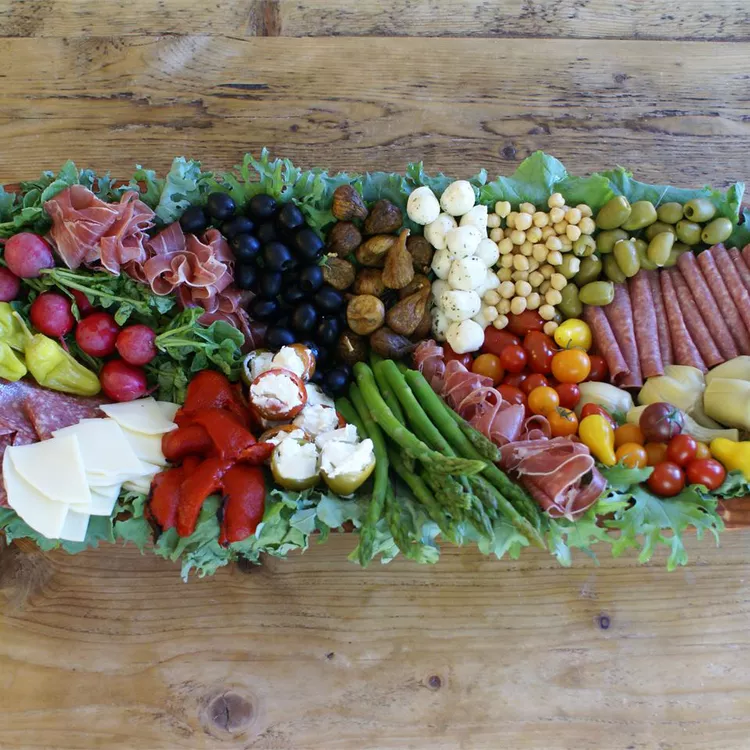

Antipasto

Description
This recipe makes a huge amount. I can it and give it away as Christmas
gifts.
We usually make this as a group project to cut down on prep time and cost.
The ingredient amounts may be altered proportionally as needed.
ingredients
- 4 cups chopped cauliflower
- 4 cups pearl onions
- 2 cups chopped red bell peppers
- 2 cups chopped green bell peppers
- 2 cups chopped celery
- 2 cucumbers - peeled, seeded and chopped
- 2 cups carrots, chopped
- 2 cups vegetable oil
- 2 cups distilled white vinegar
- 1 (6 ounce) can tomato paste
- 1 tablespoon pickling spice, wrapped in cheesecloth
- 1 cup black olives
- 1 cup pitted green olives
- 4 cups canned mushrooms
- 1 ½ (5 ounce) cans tuna, drained and flaked
Steps
-
In a large bowl with enough lightly salted water to cover, place the
cauliflower, pearl onions, red bell peppers, green bell peppers, celery
and cucumbers. Soak 8 to 12 hours, or overnight.
-
In a small bowl with enough lightly salted water to cover, place the
carrots. Soak 8 to 12 hours, or overnight.
-
In a large saucepan, place the vegetable oil, vinegar, tomato paste and
pickling spice. Bring the mixture to a boil. Drain and rinse the
carrots, and place them in the mixture. Boil 10 minutes.
-
Drain and rinse the vegetables in the cauliflower mixture. Place them
into the saucepan. Cook 10 minutes, or until the cauliflower is tender
but crisp.
-
Stir black olives, green olives, mushrooms and tuna into the mixture.
Remove the mixture from heat. Discard the wrapped pickling spice. While
still hot, transfer to sterile containers and refrigerate.
Back to recipes list